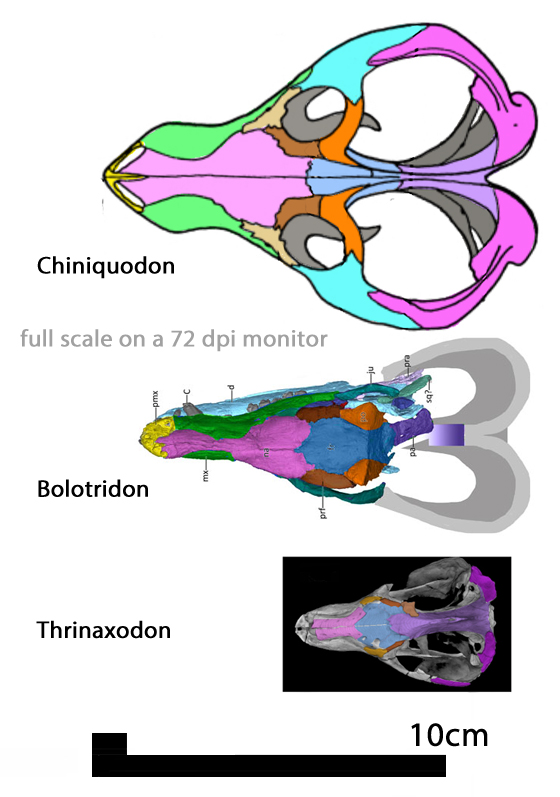

Cynodontia
Eucynodontia
Mammaliaformes
Procynosuchus

Thrinaxodon

Cynognathus

Morganucodon

Ornithorhynchus

Cladograma de Cynodontia
Selecione um táxon para visualizar
Clique em um táxon para ver os detalhes. Este cladograma mostra a transição gradual de cinodontes basais para formas mais derivadas, culminando nos mamíferos. As principais mudanças ocorreram na mandíbula, dentição e ouvido médio.